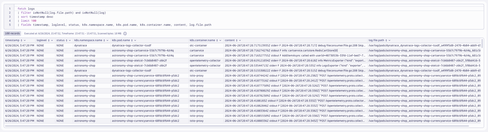

OpenTelemetry Logs#
In this module we'll utilize the OpenTelemetry Collector deployed as a DaemonSet (Node Agent) to collect pod/container logs from a Kubernetes cluster and ship them to Dynatrace. Additionally, we'll deploy the OpenTelemetry Collector as a Deployment (Gateway) to watch Kubernetes Events from the Cluster and ship them to Dynatrace.
Goals:
- Deploy OpenTelemetry Collector as a DaemonSet
- Deploy OpenTelemetry Collector as a Deployment
- Configure OpenTelemetry Collector service pipeline for log enrichment
- Query and visualize logs in Dynatrace using DQL

Prerequisites#
Import Notebook into Dynatrace
Define workshop user variables
In your Github Codespaces Terminal:
export DT_ENDPOINT=https://{your-environment-id}.live.dynatrace.com/api/v2/otlp
export DT_API_TOKEN={your-api-token}
export NAME=<INITIALS>-k8s-otel-o11y
OpenTelemetry Operator#
Move to the Base Directory
Command:
cd $BASE_DIR
You should find yourself at the base directory of the repository. If not, then navigate to it.
Create dynatrace namespace
Command:
kubectl create namespace dynatrace
Sample output:
> namespace/dynatrace created
Create dynatrace-otelcol-dt-api-credentials secret
The secret holds the API endpoint and API token that OpenTelemetry data will be sent to.
Command:
kubectl create secret generic dynatrace-otelcol-dt-api-credentials --from-literal=DT_ENDPOINT=$DT_ENDPOINT --from-literal=DT_API_TOKEN=$DT_API_TOKEN -n dynatrace
Sample output:
> secret/dynatrace-otelcol-dt-api-credentials created
Deploy cert-manager, pre-requisite for opentelemetry-operator
Cert Manager Installation Documentation
Command:
kubectl apply -f cluster-manifests/cert-manager.yaml
namespace/cert-manager created\ customresourcedefinition.apiextensions.k8s.io/certificaterequests.cert-manager.io created\ customresourcedefinition.apiextensions.k8s.io/certificates.cert-manager.io created\ ...\ validatingwebhookconfiguration.admissionregistration.k8s.io/cert-manager-webhook created
Wait 30-60 seconds for cert-manager to finish initializing before continuing.
Validate that the Cert Manager components are running.
Command:
kubectl get pods -n cert-manager
| NAME | READY | STATUS | RESTARTS | AGE |
|---|---|---|---|---|
| cert-manager-5f7b5dbfbc-fkpzv | 1/1 | Running | 0 | 1m |
| cert-manager-cainjector-7d5b44bb96-kqz7f | 1/1 | Running | 0 | 1m |
| cert-manager-webhook-69459b8974-tsmbq | 1/1 | Running | 0 | 1m |
Deploy opentelemetry-operator
The OpenTelemetry Operator will deploy and manage the custom resource OpenTelemetryCollector deployed on the cluster.
Command:
kubectl apply -f cluster-manifests/opentelemetry-operator.yaml
Sample output:
namespace/opentelemetry-operator-system created\ customresourcedefinition.apiextensions.k8s.io/instrumentations.opentelemetry.io created\ customresourcedefinition.apiextensions.k8s.io/opampbridges.opentelemetry.io created\ ...\ validatingwebhookconfiguration.admissionregistration.k8s.io/opentelemetry-operator-validating-webhook-configuration configured
Wait 30-60 seconds for opentelemetry-operator-controller-manager to finish initializing before continuing.
Validate that the OpenTelemetry Operator components are running.
Command:
kubectl get pods -n opentelemetry-operator-system
| NAME | READY | STATUS | RESTARTS | AGE |
|---|---|---|---|---|
| opentelemetry-operator-controller-manager-5d746dbd64-rf9st | 2/2 | Running | 0 | 1m |
OpenTelemetry Collector for Logs#
OpenTelemetry Collector from Dynatrace Documentation
Dynatrace offers a sample configuration for the Ingest Pod Logs use case:
Move into the lab module directory
Command:
cd $BASE_DIR/lab-modules/opentelemetry-logs
Dynatrace Distro - Daemonset (Node Agent)
OpenTelemetry Collector Node Agent Documentation
Pod (and container) logs are written to the filesystem of the Node where the pod is running. Therefore the Collector must be deployed as a Daemonset to read the log files on the local Node.
---
apiVersion: opentelemetry.io/v1beta1
kind: OpenTelemetryCollector
metadata:
name: dynatrace-logs
namespace: dynatrace
spec:
envFrom:
- secretRef:
name: dynatrace-otelcol-dt-api-credentials
mode: "daemonset"
image: "ghcr.io/dynatrace/dynatrace-otel-collector/dynatrace-otel-collector:latest"
Command:
kubectl apply -f opentelemetry/collector/logs/otel-collector-logs-crd-01.yaml
Sample output:
opentelemetrycollector.opentelemetry.io/dynatrace-logs created
Validate running pod(s)
Command:
kubectl get pods -n dynatrace
| NAME | READY | STATUS | RESTARTS | AGE |
|---|---|---|---|---|
| dynatrace-logs-collector-8q8tz | 1/1 | Running | 0 | 1m |
filelog Receiver#
Filelog Receiver Documentation
The Filelog Receiver tails and parses logs from files. Although it’s not a Kubernetes-specific receiver, it is still the de facto solution for collecting any logs from Kubernetes. Logs from the Kubernetes Node's filesystem will be read from the Collector running on that Node. This is why the Collector is deployed as a Daemonset and not a Deployment (or Sidecar).
The Filelog Receiver is composed of Operators that are chained together to process a log. Each Operator performs a simple responsibility, such as parsing a timestamp or JSON. Configuring a Filelog Receiver is not trivial. Refer to the documentation for details.
config:
receivers:
filelog:
...
service:
pipelines:
logs:
receivers: [filelog]
processors: [batch]
exporters: [otlphttp/dynatrace]
Query logs in Dynatrace
DQL:
fetch logs
| filter isNotNull(log.file.path)
| sort timestamp desc
| limit 100
| fields timestamp, loglevel, status, k8s.namespace.name, k8s.pod.name, k8s.container.name, content, log.file.path

k8sattributes Processor#
Add Kubernetes Attributes with the k8sattributes Processor
k8sattributes Processor Documentation
The Kubernetes Attributes Processor automatically discovers Kubernetes pods, extracts their metadata, and adds the extracted metadata to spans, metrics, and logs as resource attributes.
The Kubernetes Attributes Processor is one of the most important components for a collector running in Kubernetes. Any collector receiving application data should use it. Because it adds Kubernetes context to your telemetry, the Kubernetes Attributes Processor lets you correlate your application’s traces, metrics, and logs signals with your Kubernetes telemetry, such as pod metrics and traces.
Create clusterrole with read access to Kubernetes objects
Since the processor uses the Kubernetes API, it needs the correct permission to work correctly. For most use cases, you should give the service account running the collector the following permissions via a ClusterRole.
---
apiVersion: rbac.authorization.k8s.io/v1
kind: ClusterRole
metadata:
name: otel-collector-k8s-clusterrole-logs
rules:
- apiGroups: [""]
resources: ["pods", "namespaces", "nodes"]
verbs: ["get", "watch", "list"]
- apiGroups: ["apps"]
resources: ["replicasets"]
verbs: ["get", "list", "watch"]
- apiGroups: ["extensions"]
resources: ["replicasets"]
verbs: ["get", "list", "watch"]
Command:
kubectl apply -f opentelemetry/rbac/otel-collector-k8s-clusterrole-logs.yaml
Sample output:
clusterrole.rbac.authorization.k8s.io/otel-collector-k8s-clusterrole-logs created
Create clusterrolebinding for OpenTelemetry Collector service account
---
apiVersion: rbac.authorization.k8s.io/v1
kind: ClusterRoleBinding
metadata:
name: otel-collector-k8s-clusterrole-logs-crb
subjects:
- kind: ServiceAccount
name: dynatrace-logs-collector
namespace: dynatrace
roleRef:
kind: ClusterRole
name: otel-collector-k8s-clusterrole-logs
apiGroup: rbac.authorization.k8s.io
Command:
kubectl apply -f opentelemetry/rbac/otel-collector-k8s-clusterrole-logs-crb.yaml
Sample output:
clusterrolebinding.rbac.authorization.k8s.io/otel-collector-k8s-clusterrole-logs-crb created
Add k8sattributes processor
k8sattributes:
auth_type: "serviceAccount"
passthrough: false
filter:
node_from_env_var: KUBE_NODE_NAME
extract:
metadata:
- k8s.namespace.name
- k8s.deployment.name
- k8s.daemonset.name
- k8s.job.name
- k8s.cronjob.name
- k8s.replicaset.name
- k8s.statefulset.name
- k8s.pod.name
- k8s.pod.uid
- k8s.node.name
- k8s.container.name
- container.id
- container.image.name
- container.image.tag
labels:
- tag_name: app.label.component
key: app.kubernetes.io/component
from: pod
pod_association:
- sources:
- from: resource_attribute
name: k8s.pod.uid
- sources:
- from: resource_attribute
name: k8s.pod.name
- sources:
- from: resource_attribute
name: k8s.pod.ip
- sources:
- from: connection
Command:
kubectl apply -f opentelemetry/collector/logs/otel-collector-logs-crd-02.yaml
Sample output:
opentelemetrycollector.opentelemetry.io/dynatrace-logs configured
Validate running pod(s)
Command:
kubectl get pods -n dynatrace
| NAME | READY | STATUS | RESTARTS | AGE |
|---|---|---|---|---|
| dynatrace-logs-collector-dns4x | 1/1 | Running | 0 | 1m |
Query logs in Dynatrace
DQL:
fetch logs
| filter k8s.namespace.name == "astronomy-shop" and isNotNull(k8s.deployment.name)
| sort timestamp desc
| limit 100
| fields timestamp, loglevel, status, k8s.namespace.name, k8s.deployment.name, k8s.pod.name, k8s.container.name, app.label.component, content
Result:

resourcedetection Processor#
The resource detection processor can be used to detect resource information from the host, in a format that conforms to the OpenTelemetry resource semantic conventions, and append or override the resource value in telemetry data with this information. Detectors are available for AWS, Azure, GCP, and several other platforms; see the documentation for more details.
This processor is a great plugin for adding attributes such as cloud.account.id and k8s.cluster.name to the telemetry.
Add resourcedetection processor
Resource Detection Processor Documentation
processors:
resourcedetection/gcp:
detectors: [env, gcp]
timeout: 2s
override: false
note: for this lab, the Kind cluster does not have cloud metadata to collect. These values will be spoofed for the purposes of this lab.
resource/kind:
attributes:
- key: cloud.account.id
value: dt-k8s-o11y-account
action: insert
- key: k8s.cluster.name
value: dt-k8s-o11y-kind
action: insert
Command:
kubectl apply -f opentelemetry/collector/logs/otel-collector-logs-crd-03.yaml
Sample output:
opentelemetrycollector.opentelemetry.io/dynatrace-logs configured
Validate running pod(s) Command:
kubectl get pods -n dynatrace
| NAME | READY | STATUS | RESTARTS | AGE |
|---|---|---|---|---|
| dynatrace-logs-collector-fbtk5 | 1/1 | Running | 0 | 1m |
Query logs in Dynatrace
DQL:
fetch logs
| filter isNotNull(cloud.account.id) and isNotNull(k8s.cluster.name)
| filter k8s.namespace.name == "astronomy-shop" and isNotNull(k8s.deployment.name)
| sort timestamp desc
| limit 100
| fields timestamp, loglevel, status, cloud.account.id, k8s.cluster.name, k8s.namespace.name, k8s.deployment.name, content
Result:

resource Processor#
Add resource processor (attributes)
Resource Processor Documentation
The resource processor allows us to directly add, remove, or change resource attributes on the telemetry. View the documentation for more details.
We will use this processor to make the follow changes to our telemetry:
* k8s.pod.ip values in our log data are either the same or invalid; delete the useless attribute
* telemetry.sdk.name set to opentelemetry will allow us to easily identify logs captured through OpenTelemetry
* dynatrace.otel.collector is a non-standardized attribute that we made up to help us identify which Collector captured this data
* dt.security_context is a Dynatrace specific attribute that we use to manage user permissions to the telemetry
* This could also be set using OpenPipeline, but this puts control of this attribute's value at the app/infra layer (optionally)
processors:
resource:
attributes:
- key: k8s.pod.ip
action: delete
- key: telemetry.sdk.name
value: opentelemetry
action: insert
- key: dynatrace.otel.collector
value: dynatrace-logs
action: insert
- key: dt.security_context
from_attribute: k8s.cluster.name
action: insert
kubectl apply -f opentelemetry/collector/logs/otel-collector-logs-crd-04.yaml
Sample output:
opentelemetrycollector.opentelemetry.io/dynatrace-logs configured
Validate running pod(s)
Command:
kubectl get pods -n dynatrace
| NAME | READY | STATUS | RESTARTS | AGE |
|---|---|---|---|---|
| dynatrace-logs-collector-xx6km | 1/1 | Running | 0 | 1m |
Query logs in Dynatrace
DQL:
fetch logs
| filter isNotNull(dt.security_context)
| filter isNotNull(cloud.account.id) and isNotNull(k8s.cluster.name)
| filter k8s.namespace.name == "astronomy-shop" and isNotNull(k8s.deployment.name)
| sort timestamp desc
| limit 100
| fields timestamp, loglevel, status, dt.security_context, dynatrace.otel.collector, cloud.account.id, k8s.cluster.name, k8s.namespace.name, k8s.deployment.name, content
Result:

Export to OTLP Receiver#
The astronomy-shop demo application has the OpenTelemetry agents and SDKs already instrumented. These agents and SDKs are generating logs (traces and metrics too) that are being exported to a Collector running within the astronomy-shop namespace bundled into the application deployment. We want these logs to be shipped to Dynatrace as well.
Adding the otlp receiver allows us to receive telemetry from otel exporters, such as agents and other collectors.
config:
receivers:
otlp:
protocols:
grpc:
endpoint: 0.0.0.0:4317
http:
endpoint: 0.0.0.0:4318
service:
pipelines:
logs:
receivers: [otlp]
processors: [batch]
exporters: [otlphttp/dynatrace]
Command:
kubectl apply -f opentelemetry/collector/logs/otel-collector-logs-crd-05.yaml
Sample output:
opentelemetrycollector.opentelemetry.io/dynatrace-logs configured
Validate running pod(s)
Command:
kubectl get pods -n dynatrace
| NAME | READY | STATUS | RESTARTS | AGE |
|---|---|---|---|---|
| dynatrace-logs-collector-gu0rm | 1/1 | Running | 0 | 1m |
Customize astronomy-shop helm values
OpenTelemetry data created by agents and SDKs should include service.name and service.namespace attributes. We will make the service.namespace unique to our deployment using our NAME environment variable declared earlier, using a sed command on the Helm chart's values.yaml file.
default:
# List of environment variables applied to all components
env:
- name: OTEL_SERVICE_NAME
valueFrom:
fieldRef:
apiVersion: v1
fieldPath: "metadata.labels['app.kubernetes.io/component']"
- name: OTEL_COLLECTOR_NAME
value: '{{ include "otel-demo.name" . }}-otelcol'
- name: OTEL_EXPORTER_OTLP_METRICS_TEMPORALITY_PREFERENCE
value: cumulative
- name: OTEL_RESOURCE_ATTRIBUTES
value: 'service.name=$(OTEL_SERVICE_NAME),service.namespace=NAME_TO_REPLACE,service.version={{ .Chart.AppVersion }}'
service.namespace=NAME_TO_REPLACE
service.namespace=INITIALS-k8s-otel-o11y
Command:
sed -i "s,NAME_TO_REPLACE,$NAME," astronomy-shop/collector-values.yaml
Update Astronomy Shop via Helm#
Our collector-values.yaml contains new configurations for the application so that the astronomy-shop Collector includes exporters that ship to the Collectors deployed in the dynatrace namespace.
exporters:
# Dynatrace OTel Collectors
otlphttp/dttraces:
endpoint: http://dynatrace-traces-collector.dynatrace.svc.cluster.local:4318
otlphttp/dtlogs:
endpoint: http://dynatrace-logs-collector.dynatrace.svc.cluster.local:4318
otlphttp/dtmetrics:
endpoint: http://dynatrace-metrics-cluster-collector.dynatrace.svc.cluster.local:4318
Command:
helm upgrade astronomy-shop open-telemetry/opentelemetry-demo --values astronomy-shop/collector-values.yaml --namespace astronomy-shop --version "0.31.0"
Sample output:
NAME: astronomy-shop\ LAST DEPLOYED: Thu Jun 27 20:58:38 2024\ NAMESPACE: astronomy-shop\ STATUS: deployed\ REVISION: 2
Query logs in Dynatrace
DQL:
fetch logs
| filter k8s.namespace.name == "astronomy-shop" and isNotNull(service.name)
| sort timestamp desc
| limit 100
| fields timestamp, content, k8s.cluster.name, k8s.pod.name, service.namespace, service.name, telemetry.sdk.language, otel.scope.name
Result:

OpenTelemetry Collector for Events#
The Kubernetes Objects receiver collects, either by pulling or watching, objects from the Kubernetes API server. The most common use case for this receiver is watching Kubernetes events, but it can be used to collect any type of Kubernetes object.
k8sobjects Receiver#
Kubernetes Objects Receiver Documentation
Our goal is to capture any events related to the astronomy-shop and dynatrace namespaces.
receivers:
k8sobjects/events:
auth_type: serviceAccount
objects:
- name: events
mode: watch
namespaces: [astronomy-shop,dynatrace]
The k8sobjects receiver is only available on the Contrib Distro of the OpenTelemetry Collector. Therefore we must deploy a new Collector using the contrib image.
Create clusterrole with read access to Kubernetes events
Since the processor uses the Kubernetes API, it needs the correct permission to work correctly. Since service accounts are the only authentication option you must give the service account the proper access. For any object you want to collect you need to ensure the name is added to the cluster role.
---
apiVersion: rbac.authorization.k8s.io/v1
kind: ClusterRole
metadata:
name: otel-collector-k8s-clusterrole-events
rules:
- apiGroups: [""]
resources: ["events"]
verbs: ["get", "watch", "list"]
Command:
kubectl apply -f opentelemetry/rbac/otel-collector-k8s-clusterrole-events.yaml
Sample output:
clusterrole.rbac.authorization.k8s.io/otel-collector-k8s-clusterrole-events created
Create clusterrolebinding for OpenTelemetry Collector service account
---
apiVersion: rbac.authorization.k8s.io/v1
kind: ClusterRoleBinding
metadata:
name: otel-collector-k8s-clusterrole-events-crb
subjects:
- kind: ServiceAccount
name: dynatrace-events-collector
namespace: dynatrace
roleRef:
kind: ClusterRole
name: otel-collector-k8s-clusterrole-events
apiGroup: rbac.authorization.k8s.io
Command:
kubectl apply -f opentelemetry/rbac/otel-collector-k8s-clusterrole-events-crb.yaml
Sample output:
clusterrolebinding.rbac.authorization.k8s.io/otel-collector-k8s-clusterrole-events-crb created
Add k8sobjects receiver to collect Kubernetes events as logs
receivers:
k8sobjects/events:
auth_type: serviceAccount
objects:
- name: events
mode: watch
namespaces: [astronomy-shop,dynatrace]
Deploy OpenTelemetry Collector (Gateway)#
Since the receiver gathers telemetry for the cluster as a whole, only one instance of the receiver is needed across the cluster in order to collect all the data.
---
apiVersion: opentelemetry.io/v1beta1
kind: OpenTelemetryCollector
metadata:
name: dynatrace-events
namespace: dynatrace
spec:
envFrom:
- secretRef:
name: dynatrace-otelcol-dt-api-credentials
mode: "deployment"
image: "otel/opentelemetry-collector-contrib:latest"
Command:
kubectl apply -f opentelemetry/collector/events/otel-collector-events-crd-01.yaml
Sample output:
opentelemetrycollector.opentelemetry.io/dynatrace-events created
Validate running pod(s)
Command:
kubectl get pods -n dynatrace
| NAME | READY | STATUS | RESTARTS | AGE |
|---|---|---|---|---|
| dynatrace-events-collector-559d5b9d77-rb26d | 1/1 | Running | 0 | 1m |
Generate Events#
Kubectl Scale Command Documentation
We can generate new Kubernetes events related to the astronomy-shop namespace by scaling a deployment up and then scaling it back down.
Command:
kubectl scale deployment astronomy-shop-imageprovider -n astronomy-shop --replicas=2
Sample output:
deployment.apps/astronomy-shop-imageprovider scaled
Command:
kubectl get pods -n astronomy-shop -l app.kubernetes.io/name=astronomy-shop-imageprovider
| NAME | READY | STATUS | RESTARTS | AGE |
|---|---|---|---|---|
| astronomy-shop-imageprovider-84b549cf4c-nwm7z | 2/2 | Running | 0 | 9m |
| astronomy-shop-imageprovider-84b549cf4c-rs7rz | 2/2 | Running | 0 | 1m |
Command:
kubectl scale deployment astronomy-shop-imageprovider -n astronomy-shop --replicas=1
Sample output:
deployment.apps/astronomy-shop-imageprovider scaled
Command:
kubectl get pods -n astronomy-shop -l app.kubernetes.io/name=astronomy-shop-imageprovider
| NAME | READY | STATUS | RESTARTS | AGE |
|---|---|---|---|---|
| astronomy-shop-imageprovider-84b549cf4c-nwm7z | 2/2 | Running | 0 | 9m |
Query logs in Dynatrace
DQL:
fetch logs
| filter dynatrace.otel.collector == "dynatrace-events" and event.domain == "k8s" and k8s.resource.name == "events"
| filter object.metadata.namespace == "astronomy-shop"
| sort timestamp desc
| limit 100
| fields timestamp, k8s.cluster.name, {object.metadata.namespace, alias: k8s.namespace.name}, object.message, object.reason, event.name
Result:

Wrap Up#
What You Learned Today
By completing this module, you've successfully deployed the OpenTelemetry Collector to collect logs, enrich log attributes for better context, and ship those logs to Dynatrace for analysis.
- The OpenTelemetry Collector was deployed as a DaemonSet, behaving as an Agent running on each Node
- The Dynatrace Distro of OpenTelemetry Collector includes supported modules needed to ship logs to Dynatrace
- The
filelogreceiver scrapes logs from the Node filesystem and parses the contents - The
otlpreceiver receives logs that are exported from agents, SDKs, and other Collectors - The
k8sattributesprocessor enriches the logs with Kubernetes attributes - The
resourcedetectionprocessor enriches the logs with cloud and cluster attributes - The
resourceprocessor enriches the logs with custom (resource) attributes
- The
- The Community Contrib Distro of OpenTelemetry Collector includes modules needed to ship events to Dynatrace
- The
k8sobjectsreceiver watches for Kubernetes events (and other resources) on the cluster
- The
- Dynatrace DQL (via Notebooks) allows you to perform powerful queries and analysis of the log data
Continue#
Next we'll deploy the OpenTelemetry Capstone to capture logs, metrics, and traces with OpenTelemetry Collectors.